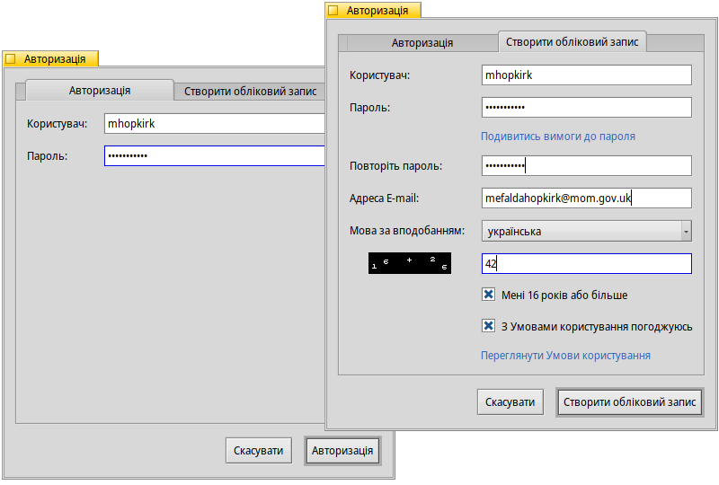

| Індекс |
| Фільтр Список Розділ інформації Меню HaikuDepot і Показати Створення облікового запису Оцінювання і коментування Журнали діагностики Корисні поради |
 HaikuDepot (Менеджер пакетів)
HaikuDepot (Менеджер пакетів)
| Deskbar: | ||
| Розташування: | /boot/system/apps/HaikuDepot | |
| Налаштування: | ~/config/settings/HaikuDepot/main_settings ~/config/cache/HaikuDepot/ – кеш значків, скриншотів, описів та інших елементів |
HaikuDepot є центральною програмою для управління пакетами програмного забезпечення. За допомогою нього Ви можете переглядати та шукати у репозитаріях пакетів, встановлювати та видаляти пакунки. За замовчуванням HaikuDepot запускається зі списком , програмного забезпечення, яке вважається цікавим для багатьох користувачів.
На другій вкладці показано список ; відображення значків змінюється на менше, у стовпчиках надається більше інформації:
 Фільтр
Фільтр
У верхній частині вікна програми Ви бачите декілька елементів управління фільтрами списку доступних пакетів:
Список який розкривається дозволяє обмежити список пакетів окремими категоріями, наприклад, «Audio» або «Games».
Текстове поле фільтрує список пакетів таким чином, що у списку відображаються тільки пакети, у назві чи описі яких є усі введені пошукові рядки (розділені пробілами).
Меню на панелі меню визначає, з яких репозитаріїв програма отримує інформацію про пакети і самі пакети.
«Локальні» пакети – це пакети, які були встановлені не з онлайн-репозитарію; можливо, з USB-накопичувача або завантажені з якогось веб-сайту чи пакета, який Ви створили самостійно.
Список
Як і в будь-якому вікні Tracker, Ви можете вибрати у контекстному меню, які стовпці відображати, зробивши правий клік миші на заголовку стовпця. Лівий клік миші сортує список відповідно до цього стовпця. Звичайно, Ви можете змінити порядок стовпців, перетягнувши їх на нове місце.
У стовпці показано, коли пакет було додано до репозитарію або коли він оновлювався. Сортуйте за цим стовпчиком, щоб побачити нові або оновлені пакети у верхній частині списку.
Стовпець пакета може мати одне із декількох значень:
: Пакет встановлений і готовий до використання.
: Пакет існує у цьому репозитарії, його можна завантажити і встановити. Якщо пакет залежить від інших пакетів, Ви будете проінформовані про це під час встановлення і матимете можливість завантажити/встановити все необхідне.
: «Очікування» інформує про пакети, які стоять у черзі на завантаження/інсталяцію. Під час завантаження пакета прогрес відображається у відсотках.
Стовпець дати показує, коли система сервера записала конкретну версію пакета. Через можливі затримки в процесі публікації ця дата може бути не зовсім точною.
Потягнувши за експандер у вігляді горизонтальної пунктирної лінії між списком пакетів і областю інформації, Ви можете змінити розмір області відображення списку пакетів.
Розділ інформації
Нижню частину екрана займає область, де відображається інформація про пакет, який наразі вибрано у списку над нею.
Праворуч від назви пакета, автора, рейтингу та версії є кнопка, яка – залежно від поточного стану пакета – дозволяє провести або цього пакета. Якщо пакет вже інстальовано, Ви знайдете там додаткову кнопку програму.
Нижче наведено чотири вкладки: «Інфо про пакет», «Оцінки», «Журнал змін» та «Вміст пакета».
На першій вкладці міститься детальний опис пакета, а також скриншоти, контактна адреса та URL-адреса команди, яка підтримує пакет, якщо такі є. Натиснувши на мініатюру скріншоту, Ви відкриєте його у повному розмірі у новому вікні
На другій вкладці відображаються оцінки та коментарі користувачів, якщо такі є.
Ліворуч – статистика, яка показує кількість зірок (від 1 до 5), які отримав пакет і від якої кількості користувачів.
Посередині – коментарі користувачів із зазначенням їхніх нікнеймів, кількості зірок, які вони поставили пакету, та версії пакету, яку вони оцінювали або коментували. Нижче Ви знайдете більше інформації про те, як оцінити пакет самостійно.
Тут Ви знайдете детальну історію усіх версій пакета, які було випущено до цього часу, якщо той хто супроводжує пакет надає таку інформацію.
Остання вкладка показує усі файли та папки, які містить пакет. Це працює лише для вже завантажених пакетів.
Меню HaikuDepot і Показати
У меню головного меню програми Ви знайдете пункт . За допомогою цього пункту виконується запит на отримання актуального списку усіх доступних пакетів з підключених репозитаріїв.
Другий пункт – . Він відкриває панель налаштувань Repositories, для додавання/видалення або під'єднання/від'єднання репозитаріїв.
запускає програму SoftwareUpdater для пошуку оновлених пакетів та їх інсталяції.
відкриває вікно з єдиною наразі опцією: . Ці дані використовуються, наприклад, для збільшення лічильника кількості переглядів та інсталяцій пакета, що потім може вплинути на перехід пакета до списку «Рекомендовані пакети».
У меню Ви можете вибрати, щоб у списку пакетів також були показані та . Для звичайного користувача вони не становлять інтересу і лише захаращують список. Однак вони є важливими для людей, яким потрібні бібліотеки, заголовки і т.п. з пакетів для розробки для компіляції програм на їх основі.
Більший інтерес викликають пункти і , які фільтрують список пакетів за цими категоріями.
Створення облікового запису користувача
Щоб мати можливість оцінити пакет, Вам потрібен обліковий запис користувача на Haiku Depot Server, який обслуговує усі пакети та відстежує оцінки і коментарі користувачів. Ви можете створити обліковий запис у програмі HaikuDepot, натиснувши на меню в крайній правій частині панелі меню, яке показує Ваш поточний статус: . Вибір пункту відкриває вікно з двома вкладками; одна для введення Вашого імені користувача і пароля (якщо вони у Вас є) для входу, а інша для створення нового облікового запису:
Для створення облікового запису потрібно:
- записувати ім'я користувача у нижньому регістрі без спеціальних символів
- використовувати пароль довжиною не менше 8 символів, які містять щонайменше 2 великі літери та 2 цифри
- вказати дійсну адресу електронної пошти (якщо Ви хочете, щоб Вам було надіслано новий пароль, якщо Ви його забули)
- вирішити капчу
- підтвердити, що Вам більше 16 років і Ви прочитали умови користування, посилання на які наведено нижче.
Після входу в систему у меню в крайній правій частині панелі меню HaikuDepot з'явиться напис , де буде вказано Ваше ім'я користувача. Тепер меню пропонує Вам або .
Як нагадування про те, на що Ви фактично погодилися, коли позначили чекбокс у згаданому вище полі, є пункти меню
Оцінювання і коментування
Після того, як Ви створили обліковий запис користувача і увійшли в систему, Ви можете оцінити пакет і залишити коментар, якщо хочете. Просто наведіть курсор миші на зірочки рейтингу в інформаційній області пакета і вони перетворяться на кнопку . Натисніть її, щоб відкрити вікно оцінки:
Тут Ви можете навести курсор миші на зірочки, щоб вони засвітилися, і вибрати свою оцінку, також Ви можете вибрати один з декількох рівнів оцінки стабільності роботи програми і вибрати мову Вашого необов'язкового коментаря. Щоб Ваш коментар був змістовним, Вам слід попрацювати з програмою, яку Ви збираєтеся оцінити, щоб ознайомитися з її можливостями, помилками і особливостями. І не пишіть наступний великий американський роман… нехай коментар буде короткий, по суті і ввічливий. :)
Після натискання кнопки дані передаються на сервер. Можливо, Вам доведеться зайти в меню і вибрати пункт , перш ніж Ви зможете побачити зміни.
У будь-який момент Ви можете повернутися, відредагувати свій коментар і зробити повторне оцінювання. Ви можете приховати свою оцінку від інших користувачів, знявши позначку з опції , яка з'являється у цьому вікні після того, як Ви оцінили пакет.
Журнали діагностики
HaikuDepot взаємодіє як з мережевими, так і з локальними сервісами. Іноді, щось може піти не так, як це передбачалося під час написання програми. У таких випадках повідомлення про помилку може бути не зовсім конкретним. Щоб допомогти діагностувати проблему, HaikuDepot може надати журнал того, що робить програма.
У повідомленні про помилку можна запропонувати переглянути журнали для отримання більш детальної інформації або Вас можуть попросити надати журнал, коли Ви створюєте тікет у системі відстеження помилок Haiku.
Щоб переглянути журнали діагностики, HaikuDepot потрібно запустити з терміналу:
HaikuDepot -v debug
Команда використовує параметр -v для управління деталізацією діагностичних журналів. Можливі значення: off, info, debug і trace. Використання параметра off призведе до створення журналу з мінімальним обсягом записів, тоді як trace – до максимальної деталізації.
Під час запуску HaikuDepot і під час взаємодії з програмою у вікні терміналу Ви побачите постійний вивод текстових повідомлень; це діагностичний журнал.
Корисні поради
Існує ще один спосіб відстежувати нові та оновлені пакети, окрім сортування стовпця у списку пакетів. Для цього Вам потрібно створити канал RSS ATOM на веб-сайті Haiku Depot Server. Натисніть віджет «гамбургер» угорі праворуч і виберіть у розділі «Data».
Найцікавіше з кількох налаштувань на цій сторінці: Окрім отримання стрічки новин для усіх нових/оновлених пакетів, Ви можете додати назви конкретних пакетів, які Вас цікавлять. Натисніть кнопку і Ви отримаєте URL-адресу RSS, яку можна вставити у програму читання каналів RSS, наприклад, BePodder, QuiteRSS, fRiSS, тощо.